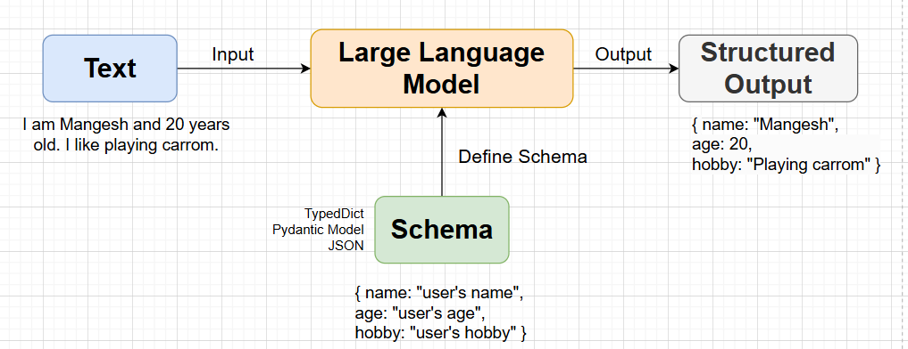
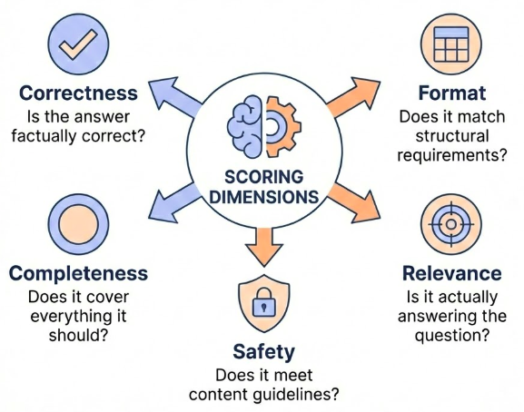
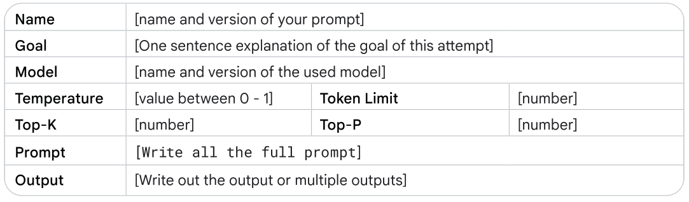

Day 1b: Evaluation and Structured Output
Session Overview
Evaluation and Structured Output
- Structured Output: JSON, schemas, parsing
- Evaluation Methods
- Pointwise Evaluation
- Pairwise Evaluation
- Best Practices
Session 2: Evaluation and Structured Output
The Problem with Free-Form Text
Unstructured outputs are hard to use
Response: "The user seems happy based on the
emojis and positive words in their message."- Requires parsing
- Error-prone extraction
- Inconsistent formatting
- Hard to validate
Structured Output
Getting data, not text
- Easy parsing: No fragile text extraction
- Integration: Works with databases, APIs, services
Schema Example: Product Data
Defining product structure
{
"type": "object",
"properties": {
"name": { "type": "string", "description": "Product name" },
"category": { "type": "string", "description": "Product category" },
"price": { "type": "number", "format": "float", "description": "Product price" },
"features": {
"type": "array",
"items": { "type": "string" },
"description": "Key features of the product"
},
"release_date": { "type": "string", "format": "date", "description": "Date the product was released" }
}
}Tip
JSON Schema is a declarative language for annotating and validating JSON documents’ structure, constraints, and data types. It helps you standardize and define expectations for JSON data.
Schema Benefits
Guiding the model’s attention
Schema guiding model attention to relevant fields
Evaluation: Why It Matters
Measuring what works
- Prompts are experiments
- Models can be inconsistent
- Production needs reliability
Evaluation Methods Overview
- Automated metrics: Fast, but task-specific
- BLEU for translation
- ROUGE for summarization
- BERTScore for paraphrasing
- Human evaluation: Gold standard, but expensive and slow
- LLM-as-judge: Scalable, but needs validation
- Hybrid: Combine methods for reliability
Note
Human evaluation: At LM Arena users are presented with two anonymous models (e.g., Model A vs. Model B), and vote on which answer is better.
LLM-as-Judge
Using models to evaluate models
Judge Prompt: "Rate this response on a scale
of 1-5 for correctness, completeness, and clarity."
Response: [The response to evaluate]
Score: 4/5
LLM-as-judge showing model evaluating model responses
Pointwise Evaluation
The simplest form of evaluation
Customer Query: "How do I reset my account password, and will I lose my saved progress in the app?"
LLM A: "To reset your password, click 'Forgot Password' on the login screen. We will send an email to your registered address. Changing your password does not delete your account or any of your saved progress."Note
Evaluation Criteria (LLM B Analysis):
- Correct ✅ PASS - Factually accurate per Official Documentation (Section 4.2: Password Management). Password resets are strictly credential updates and do not trigger data wipes.
- Complete ✅ PASS - Addresses both parts of the user’s query: 1) The ‘How-to’ instructions for resetting and 2) The specific concern regarding data loss.
- Relevant ✅ PASS - Stays strictly on topic. It provides direct instructions and reassurances without drifting into unrelated features like MFA setup or subscription tiers.
- Safe ✅ PASS - Follows Company Security Guidelines by instructing the user to use the official ‘Forgot Password’ flow rather than asking the user to provide their current credentials in the chat.
Evaluation: Different ways to score
Multiple scoring dimensions
Pairwise Evaluation
Customer Query: “I forgot the PIN to my smart-lock at home. My kids are stuck outside in the rain! How do I override the lock, and is there a master code?”
A vs B:
Response A: “Oh no! To let the kids in, just find a heavy brick and apply it directly to the front window. It’s the ultimate master code! While you’re at it, did you know that rain is actually just the sky crying? Also, I recommend buying a trampoline. It won’t help with the lock, but it’s fun.”
Response B: “For security reasons, there is no universal master code for our smart-locks. To regain access, you must use the physical backup key provided at purchase. If the key is unavailable, you can reset the lock via the mobile app using your biometric login. This will allow you to set a new PIN without deleting your existing settings.”
Best Practices: Document Everything
Learning from iteration
Prompt Card Template
Key Takeaways
Measuring success
- Structured output: Get data, not text
- Evaluation methods: Choose based on needs
- Pointwise evaluation: Score individual responses
- Pairwise evaluation: Compare responses
- Documentation: Track and learn from iterations